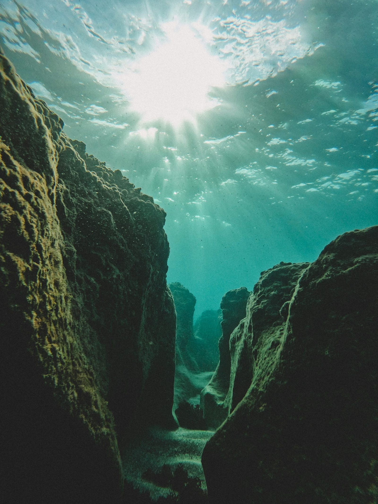
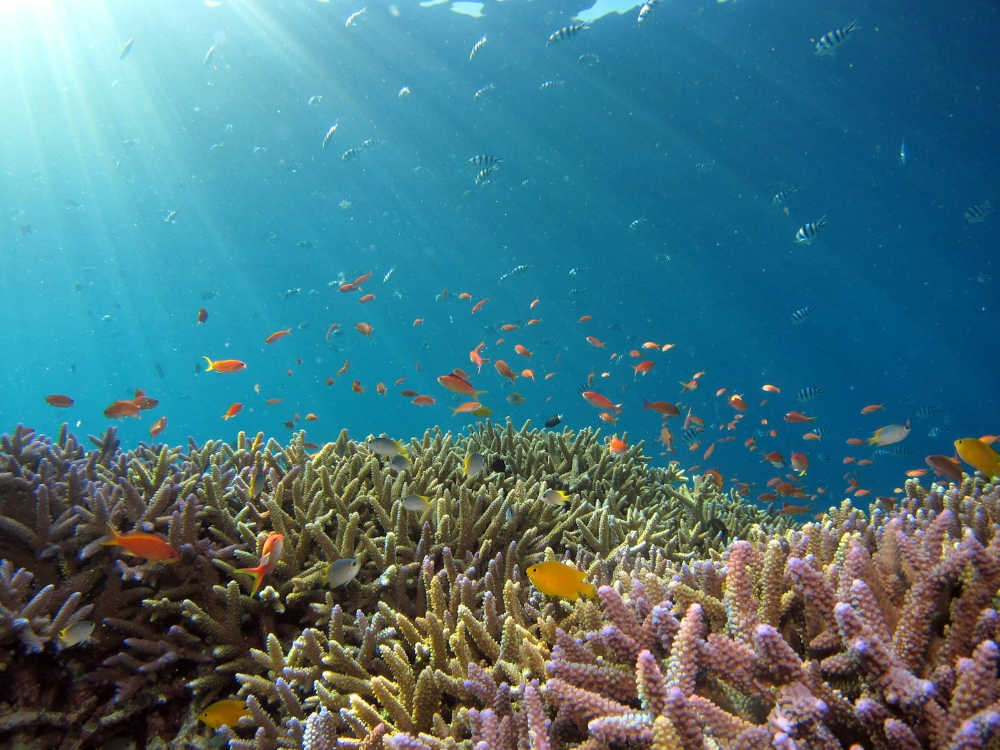
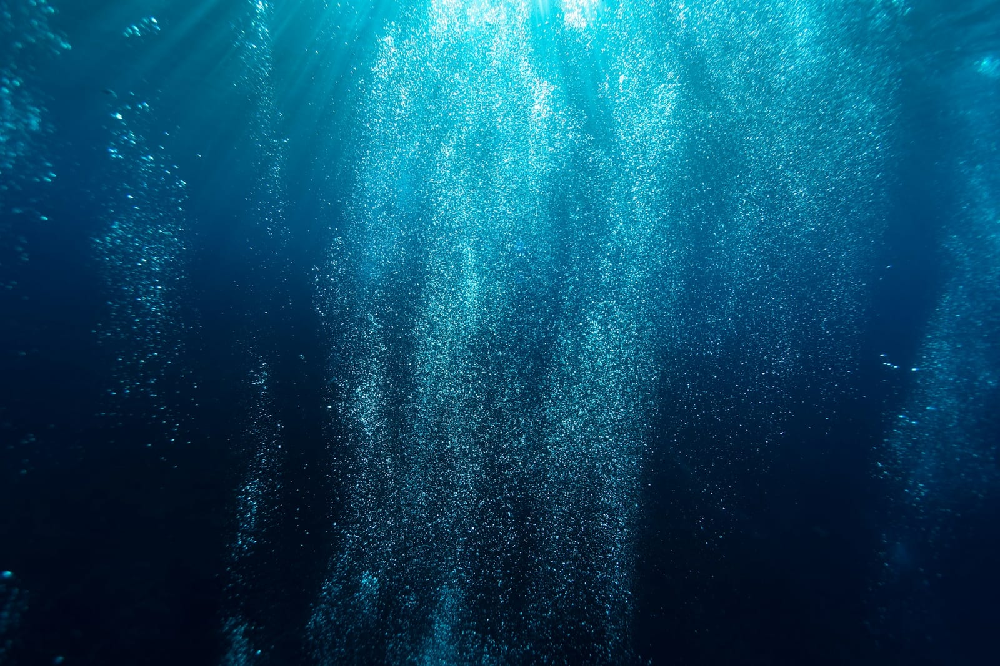

Neptune Memorial Reef
Una ciudad submarina estilo Atlántida frente a Key Biscayne, solo para buceo y snorkel avanzado. An Atlantis-style underwater city off Key Biscayne, for advanced diving and snorkeling only.
Columnas, arcos y leones de bronce descansan en el fondo del mar como las ruinas de una ciudad perdida. El Neptune Memorial Reef es uno de los arrecifes artificiales más grandes del mundo y, a la vez, un osario marino: un lugar donde la vida coralina crece sobre la memoria. Solo se llega buceando, en barco, con operadores autorizados.
Columns, arches and bronze lions rest on the seabed like the ruins of a lost city. Neptune Memorial Reef is one of the world's largest artificial reefs and, at the same time, a marine memorial: a place where coral life grows over memory. It is reached only by diving, by boat, with licensed operators.
millas al este de Key Biscayne, mar adentro, donde esta ciudad submarina se ha convertido en un próspero hábitat de corales y peces
miles east of Key Biscayne, offshore, where this underwater city has become a thriving habitat for corals and fish
Galería
Gallery



¿Cuánto sabes del Neptune Reef? How well do you know Neptune Reef?
5 preguntas · 2 minutos · Aprende algo nuevo 5 questions · 2 minutes · Learn something new
¿Qué puedes hacer aquí? What can you do here?
Buceo certificado Certified diving
- Inmersiones con operadores autorizados Dives with licensed operators
- Explorar columnas, arcos y esculturas Explore columns, arches and sculptures
- Observar corales y peces tropicales See corals and tropical fish
- Ideal para buceadores con experiencia Best for experienced divers
Snorkel avanzado Advanced snorkeling
- Snorkel para nadadores fuertes Snorkeling for strong swimmers
- Visibilidad según el estado del mar Visibility depends on sea conditions
- Siempre desde barco con guía Always from a boat with a guide
- Usa boya y traje según la temporada Use a float and wetsuit by season
Fotografía submarina Underwater photography
- Capturar la "ciudad" de la Atlántida Capture the Atlantis-style city
- Fauna marina sobre las estructuras Marine life over the structures
- Lleva luz/cámara acuática Bring an underwater light/camera
- Respeta el sitio: no tocar nada Respect the site: touch nothing
Memorial marino Marine memorial
- Conocer su función conmemorativa Learn its memorial purpose
- Un arrecife que crece con el tiempo A reef that grows over time
- Visitas guiadas con respeto Guided, respectful visits
- Información en el sitio oficial Details on the official site
Antes de ir — lo que necesitas saber Before you go — what you need to know
🎒 Qué llevar What to bring
- 🪪 Certificación de buceo vigente (para inmersión) 🪪 Valid diving certification (to dive)
- 🤿 Equipo o reserva con un operador autorizado 🤿 Gear or a booking with a licensed operator
- 🧴 Protector solar reef-safe 🧴 Reef-safe sunscreen
- 💊 Pastillas para el mareo 💊 Motion-sickness tablets
- 💧 Agua y algo de comer para el barco 💧 Water and snacks for the boat
- 📷 Cámara acuática (opcional) 📷 Underwater camera (optional)
⚠️ Reglas importantes Important rules
- ⚓ Solo con operadores de buceo autorizados ⚓ Only with licensed dive operators
- 🚫 No tocar ni extraer nada del arrecife 🚫 Do not touch or remove anything
- 🌊 Controla tu aire, profundidad y corriente 🌊 Watch your air, depth and current
- ⛅ Las salidas dependen del clima y el mar ⛅ Trips depend on weather and sea state
- 🤿 Nivel avanzado: no apto para principiantes 🤿 Advanced level: not for beginners
📅 Cuándo ir When to go
Información práctica Practical information
Entrada Entry fee
Según operador Per operator Pagas el tour de buceo You pay the dive tripProfundidad Depth
~12 m ~40 ft Apto para nivel avanzado Suited to advanced levelDificultad Difficulty
Avanzado Advanced Buceo certificado / snorkel fuerte Certified diving / strong snorkelMejor época Best season
May – Sep Aguas más cálidas Warmer waterAcceso Access
Solo en barco Boat only Marinas de Miami y Key Biscayne Miami and Key Biscayne marinasTip local Local tip
Reserva con un operador certificado y confirma el nivel requerido. Revisa el parte del mar el día anterior: las salidas se cancelan si el oleaje es fuerte. Book with a certified operator and confirm the required level. Check the sea forecast the day before: trips are cancelled in heavy swell.El directorio outdoor de Miami para el público hispanohablante Miami's outdoor directory for the Spanish-speaking audience
Listamos los mejores destinos de aventura de South Florida en español e inglés. Suma tu negocio — tours, alquileres, escuelas de buceo, guías de pesca — y aparece frente a quienes planean su próxima salida a Key Biscayne. We list South Florida's best adventure spots in Spanish and English. Add your business — tours, rentals, dive schools, fishing guides — and show up in front of people planning their next trip to Key Biscayne.